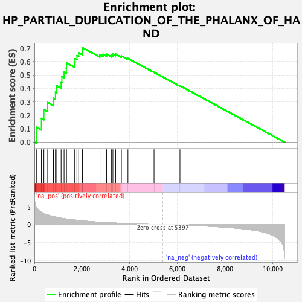
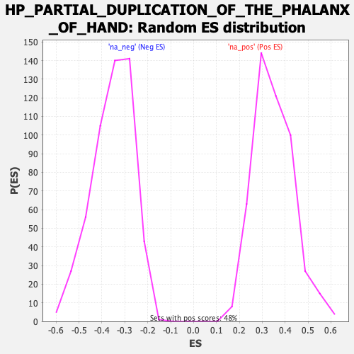

| Dataset | qlf.KOd4vsWTd4_gsea_score |
| Phenotype | NoPhenotypeAvailable |
| Upregulated in class | na_pos |
| GeneSet | HP_PARTIAL_DUPLICATION_OF_THE_PHALANX_OF_HAND |
| Enrichment Score (ES) | 0.70352095 |
| Normalized Enrichment Score (NES) | 2.0157728 |
| Nominal p-value | 0.0 |
| FDR q-value | 4.8283854E-4 |
| FWER p-Value | 0.055 |

| SYMBOL | RANK IN GENE LIST | RANK METRIC SCORE | RUNNING ES | CORE ENRICHMENT | |
|---|---|---|---|---|---|
| 1 | RPL5 | 82 | 4.819 | 0.1114 | Yes |
| 2 | TSR2 | 294 | 3.446 | 0.1765 | Yes |
| 3 | CHSY1 | 397 | 3.083 | 0.2430 | Yes |
| 4 | RPL15 | 557 | 2.721 | 0.2951 | Yes |
| 5 | RPL35A | 800 | 2.259 | 0.3279 | Yes |
| 6 | RPL27 | 882 | 2.152 | 0.3734 | Yes |
| 7 | RPL11 | 939 | 2.074 | 0.4194 | Yes |
| 8 | DVL1 | 1121 | 1.814 | 0.4470 | Yes |
| 9 | RPS7 | 1153 | 1.780 | 0.4881 | Yes |
| 10 | RPL18 | 1245 | 1.682 | 0.5210 | Yes |
| 11 | RPS26 | 1339 | 1.591 | 0.5515 | Yes |
| 12 | RPS10 | 1344 | 1.589 | 0.5904 | Yes |
| 13 | RPL35 | 1677 | 1.315 | 0.5912 | Yes |
| 14 | RPS17 | 1703 | 1.299 | 0.6210 | Yes |
| 15 | RPL31 | 1785 | 1.241 | 0.6440 | Yes |
| 16 | RPS19 | 1859 | 1.177 | 0.6661 | Yes |
| 17 | RPS24 | 2008 | 1.073 | 0.6785 | Yes |
| 18 | RPS20 | 2022 | 1.060 | 0.7035 | Yes |
| 19 | RPS28 | 2753 | 0.690 | 0.6509 | No |
| 20 | INTU | 2879 | 0.636 | 0.6548 | No |
| 21 | RPS15A | 3029 | 0.587 | 0.6551 | No |
| 22 | GATA1 | 3239 | 0.514 | 0.6478 | No |
| 23 | NUP107 | 3296 | 0.492 | 0.6547 | No |
| 24 | RPS27 | 3409 | 0.458 | 0.6553 | No |
| 25 | PPP2R3C | 3652 | 0.382 | 0.6417 | No |
| 26 | RPS29 | 3927 | 0.310 | 0.6232 | No |
| 27 | CANT1 | 5023 | 0.066 | 0.5204 | No |
| 28 | FANCD2 | 6112 | -0.116 | 0.4194 | No |
